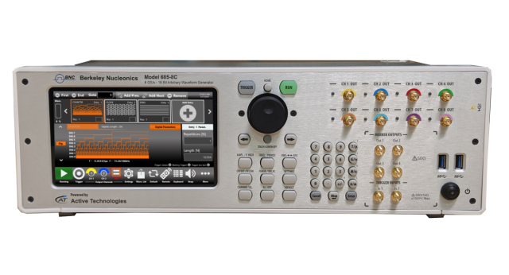
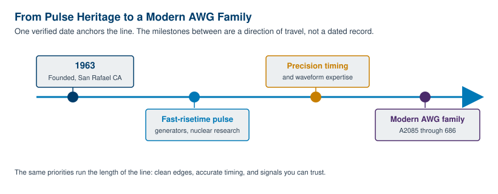
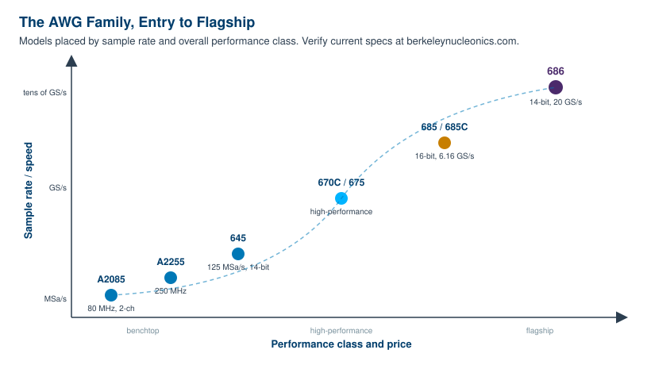
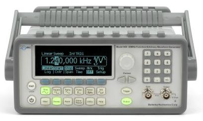

Chapter 11: Berkeley Nucleonics AWG Solutions

Everything to this point has been vendor-neutral on purpose. Sampling theory does not care whose logo is on the front panel, and a Nyquist zone behaves the same in every lab. This final chapter changes register. It looks at how one manufacturer, Berkeley Nucleonics Corporation, has built a line of arbitrary waveform generators around the principles the book has covered: fidelity, sequencing, and synchronization. The aim here is to map the concepts you now understand onto real instruments, so that when you reach for a spec sheet, you already know what the numbers mean and which model is built to deliver them.
A short note on sourcing before we start. Every Berkeley Nucleonics specification stated in this chapter is drawn from the current product line, and the figures move from time to time as products improve. Treat the datasheet at berkeleynucleonics.com as the authority. Where a useful detail is not part of the verified record, this chapter says "see datasheet" rather than guess, because a number you cannot trust is worse than no number at all.
11.1 A Word on Our Design Philosophy
Berkeley Nucleonics was founded in 1963 to build fast-risetime pulse generators for nuclear research. That origin matters more than it might seem. A pulse generator for nuclear instrumentation lives or dies on edge quality and timing accuracy, because the experiments downstream are counting events and measuring intervals where a few picoseconds of jitter or a soft edge changes the answer. The company learned, early and under pressure, that a signal source is only as good as the cleanliness of what comes out of the connector.
That heritage runs straight into the modern arbitrary waveform generator line. The same instincts that shaped a good pulse generator (sharp edges, accurate timing, low jitter, predictable behavior) are exactly the instincts that shape a good AWG. The instrument still based in San Rafael, California carries decades of precision timing and waveform work in its design language. When you read the earlier chapters on rise time, on settling, and on phase coherence between channels, you were reading about the things this company has cared about since before the integrated circuit was common.

Three commitments shape the present line, and each ties back to a theme of this book. The first is clean signals. Fidelity is the whole point of an arbitrary waveform generator, since a waveform you cannot reproduce accurately is just an idea, not a test stimulus. The second is strong software and a usable interface. An AWG that can build any waveform in principle is useless if you cannot describe the waveform you want, so the line pairs the hardware with tools for creating, importing, and sequencing waveforms, and with remote interfaces that fit into an automated bench. The third is cost-effective instruments, the recognition that not every lab needs twenty gigasamples per second, and that an entry-level bench source that does its job well is as honorable a product as a flagship.
Engineer's corner. A surprising amount of an AWG's real-world value lives in the software, not the silicon. The sample rate sets the ceiling on what the instrument can do, but the waveform editor, the import path, and the sequencer set how much of that ceiling you can actually reach on a deadline. When you compare instruments, budget time to evaluate the toolchain, not just the front-panel specs.
11.2 The Berkeley Nucleonics AWG Family
The family is best understood as a ladder. At the bottom sit compact benchtop sources for everyday characterization and teaching. In the middle sit higher-performance instruments for serious signal work. At the top sit wideband, high-resolution generators built for radar, quantum control, advanced communications, and semiconductor test. You climb the ladder as your highest-frequency content, your dynamic-range needs, and your channel count grow.
The Model A2085 is the entry point: a two-channel, 80 MHz arbitrary waveform generator positioned as an entry-level benchtop instrument, with pricing that starts around $1,700. It is the model you reach for when you need a dependable bench source without paying for headroom you will not use. The Model A2255 sits just above it, a 250 MHz benchtop arbitrary waveform generator for work that pushes past the A2085's range while staying in the benchtop class.
The Model 645 is a combined arbitrary waveform and function generator aimed at the broad middle of bench work. It produces sine output to 50 MHz and arbitrary waveforms to 10 MHz, with 14-bit vertical resolution and a 125 MSa/s sample rate. It carries 256K points of arbitrary memory and a built-in pattern generator, and it ships with the WaveCrafter software for creating and importing waveforms. We profile it in detail below.
The Model 670C and Model 675 are high-performance members of the family. They occupy the rung between the general-purpose bench instruments and the wideband flagship tier. For their detailed specifications, consult the datasheet, since the verified record here does not fix every parameter.
At the high end, the Model 685 and Model 685C bring 16-bit vertical resolution together with a 6.16 GS/s sample rate and up to 2 GHz of bandwidth. They reach 110 ps rise and fall times, deliver up to 5 Vpp single-ended (3 Vpp differential), and hold up to 4 GSamples of memory per channel. Their sequencer supports loops, jumps, and conditional branches, and up to four channels can run fully synchronized. This is the instrument for high-fidelity wideband scenarios where both resolution and sequencing matter.
The Model 686 is the flagship and, by the verified record, the fastest 14-bit AWG on the market. It runs a 20 GS/s real-time update rate, produces sine output to 6.5 GHz, reaches 10 GHz of bandwidth, and resolves 50 ps rise and fall times. It offers up to 5 Vpp output across 2 or 4 fully synchronized analog channels, pairs those channels with 32 digital lines per unit, and holds up to 9 GSamples of waveform memory per channel. It is positioned for semiconductor testing and other demanding applications.

11.3 The Family at a Glance
The table below gathers the verified specifications in one place. Where a cell is not fixed by the verified record, it reads "See datasheet" rather than a guessed value. Always confirm current numbers at berkeleynucleonics.com before committing a design to a particular model.
| Model | Class / Positioning | Vertical Resolution | Sample Rate | Analog Bandwidth | Channels | Memory | Notable |
|---|---|---|---|---|---|---|---|
| A2085 | Entry-level benchtop | See datasheet | See datasheet | 80 MHz | 2 | See datasheet | Starting around $1,700 |
| A2255 | Benchtop | See datasheet | See datasheet | 250 MHz | See datasheet | See datasheet | Benchtop, higher range than A2085 |
| 645 | Bench arb / function generator | 14-bit | 125 MSa/s | 50 MHz sine / 10 MHz arb | See datasheet | 256K points | WaveCrafter software, pattern generator |
| 670C | High-performance | See datasheet | See datasheet | See datasheet | See datasheet | See datasheet | See datasheet |
| 675 | High-performance | See datasheet | See datasheet | See datasheet | See datasheet | See datasheet | See datasheet |
| 685 / 685C | High-resolution wideband | 16-bit | 6.16 GS/s | Up to 2 GHz | Up to 4 synchronized | Up to 4 GSamples/ch | 110 ps edges; loops, jumps, conditional branches |
| 686 | Flagship, semiconductor test | 14-bit | 20 GS/s | 10 GHz (6.5 GHz sine) | 2 or 4 synchronized + 32 digital lines | Up to 9 GSamples/ch | Fastest 14-bit AWG; 50 ps edges |
11.4 Model 645: Bench Arbitrary / Function Generator
The Model 645 is the instrument most benches actually need most of the time. It is a combined arbitrary waveform and function generator, which means it covers both the standard function-generator catalog and true sample-by-sample arbitrary playback in one box. On the function side it produces sine, square, ramp, triangle, pulse, noise, and DC, with AM, FM, PM, FSK, and PWM modulation, linear and logarithmic sweeps, and burst modes. Sine output reaches 50 MHz. Arbitrary waveforms run to 10 MHz, backed by 14-bit vertical resolution and a 125 MSa/s sample rate.

Memory and pattern generation are where the 645 earns its keep on a working bench. It carries 256K points of arbitrary memory and stores up to five waveforms, four in nonvolatile memory plus one volatile, so your common stimuli stay loaded between sessions. A separate 16-bit by 256K pattern generator handles digital pattern work alongside the analog output. For waveform creation and import, the instrument ships with WaveCrafter software, so you can draw, compute, or import a waveform on a PC and load it into the instrument rather than building everything from the front panel.
Connectivity is built for an automated bench. USB and LAN are standard, with GPIB available as an option, and a sync output lets you align the 645 with the rest of your setup. The LAN interface includes web-browser remote control, which means you can drive the instrument from a browser without installing a client. For general characterization, education, and modulation work that lives comfortably below the tens of megahertz, the 645 is a sensible default.
Pro tip. The 645's four nonvolatile waveform slots are worth a few minutes of setup. Load your most-used stimuli once (a calibration tone, a standard pulse, a reference modulation, a known test pattern) and they survive a power cycle. A bench source you do not have to reprogram every morning is a quietly faster bench.
11.5 Model 685 and 685C: High-Resolution Wideband
The Model 685 and 685C are the instruments to reach for when both resolution and bandwidth have to be high at the same time. The 16-bit vertical resolution is the headline. As Chapter 3 covered, every extra bit lowers the quantization noise floor, and sixteen bits buys a great deal of dynamic range for placing small spectral detail beside a large signal. Pair that resolution with a 6.16 GS/s sample rate and up to 2 GHz of bandwidth, and you have a source that can build wideband signals without trading away the fine vertical detail that makes them faithful.
The edges are fast, with 110 ps rise and fall times, and the output reaches up to 5 Vpp single-ended or 3 Vpp differential, which covers most direct-drive and balanced-input needs without external amplification. Memory runs up to 4 GSamples per channel, which is the difference between looping a short segment and playing a long, non-repeating scenario in full.
Sequencing is the other half of the story. The 685 sequencer supports loops, jumps, and conditional branches, the building blocks Chapter 5 described for assembling long, structured playback from compact segments. With up to four fully synchronized channels, the 685 family suits high-fidelity work in radar, quantum control, and advanced communications, where you often need several phase-aligned signals carrying a precisely timed scenario. Confirm the specifics that matter to your application against the datasheet at berkeleynucleonics.com.
11.6 Model 686: The Flagship
The Model 686 is the top of the line and, by the verified record, the fastest 14-bit AWG on the market. Its defining number is a 20 GS/s real-time update rate, which gives it the sample budget to synthesize signals other instruments have to upconvert. Sine output reaches 6.5 GHz, analog bandwidth reaches 10 GHz, and rise and fall times come down to 50 ps. Output reaches up to 5 Vpp. This is direct, high-speed generation of signals that used to demand a chain of external hardware.

Channel architecture is what makes the 686 a system instrument rather than a single source. It offers 2 or 4 fully synchronized analog channels, and it pairs those analog channels with 32 digital lines per unit, so you can drive a device under test with coordinated analog and digital stimulus from one chassis. Waveform memory runs up to 9 GSamples per channel, enough to hold long, complex, non-repeating scenarios at full rate.
The 686 is positioned for semiconductor testing and other demanding applications, the places where you need the fastest edges, the widest bandwidth, and tightly coordinated analog and digital playback together. It is the instrument you specify when the test itself is at the edge of what is possible, not the one you buy for routine bench work. As always, verify the current specification set at berkeleynucleonics.com before designing it into a program.
11.7 Application Case Studies
The vignettes below are representative illustrations, not specific customer claims. They show how a need maps onto a member of the family. Your own requirements should always be derived from the signal itself, the way Chapter 9 laid out, and then matched to an instrument.
Radar threat emulation maps to the 686. Suppose a team needs to emulate a dense electromagnetic environment: multiple emitters, wide instantaneous bandwidth, fast pulse edges, and coordinated digital control lines to gate the scenario. The requirement is dominated by speed and bandwidth, with tightly synchronized analog and digital playback. That points squarely at the flagship. The 20 GS/s update rate and 10 GHz bandwidth carry the wideband content, the 50 ps edges keep the pulses crisp, and the 32 digital lines alongside the synchronized analog channels orchestrate the scenario from one chassis.
High-fidelity quantum control maps to the 685. Now suppose the need is precise control pulses for a quantum experiment, where small amplitude errors translate directly into control errors, and several channels must stay phase-aligned through a long sequence. Here the dominant requirement is vertical fidelity and clean multi-channel sequencing, not raw top-end frequency. The 685 family answers it: 16-bit resolution for the low noise floor, up to four synchronized channels, and a sequencer with loops, jumps, and conditional branches to assemble a long control sequence from compact segments.
General bench characterization maps to the 645 or the A2085. Finally, consider routine work: characterizing a filter, exercising a sensor front end, teaching modulation, generating a standard set of stimuli day after day. None of this needs gigasamples per second. The 645 covers it with arbitrary playback, the full function-generator catalog, modulation modes, and WaveCrafter for building waveforms. When the budget and the bandwidth needs are both modest, the A2085 entry-level benchtop does the job at a starting price around $1,700.
11.8 Selection Guide and Support
The quickest way to choose is to start from the signal and climb the ladder only as far as you must. The short version goes like this:
- Routine bench and teaching, modest frequencies: the A2085 (2-channel, 80 MHz, entry-level benchtop) or the A2255 (250 MHz benchtop) when you need more range.
- General arbitrary and function-generator work with modulation and pattern needs: the Model 645, with WaveCrafter software and a built-in pattern generator.
- Serious signal work between the bench class and the wideband tier: the Model 670C and Model 675 (see datasheet for the parameters that matter to you).
- High-resolution wideband, multi-channel fidelity, advanced sequencing: the Model 685 and 685C.
- The fastest edges, widest bandwidth, and coordinated analog plus digital playback: the flagship Model 686.
Two practical reminders close the chapter. First, the software and interfaces are part of the decision. The Model 645 ships with WaveCrafter for waveform creation and import, and the standard remote interfaces across the line let an instrument drop into an automated bench rather than living as an island. Match the toolchain to your workflow, not just the front-panel numbers.
Second, specifications move as products improve, and the verified figures in this chapter are a snapshot, not a contract. Before you commit a design or a purchase, confirm the current numbers against the datasheet at berkeleynucleonics.com, and talk to a Berkeley Nucleonics engineer about your actual signal. The fastest route from a requirement to the right instrument is a conversation with someone who knows the whole family. You bring the signal. They bring the map.